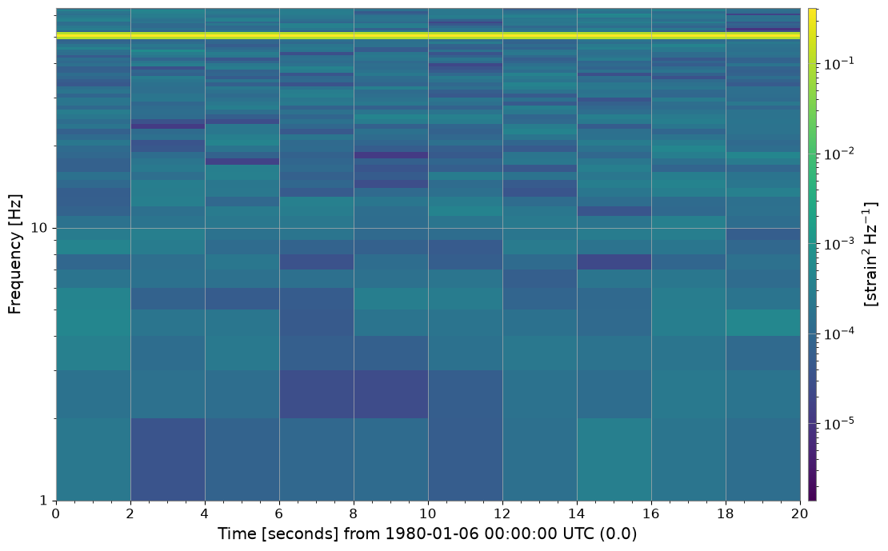

Spectrogram: Basics#
This notebook introduces the newly added SpectrogramList and SpectrogramDict classes in gwexpy.
These classes are containers for managing multiple spectrogram data (gwpy.spectrogram.Spectrogram) collectively and performing batch operations (cropping, rebinning, plotting, etc.).
They have a similar interface to TimeSeriesList / TimeSeriesDict which handle time series data, but are specialized for 2D data (time × frequency).
import warnings
warnings.filterwarnings("ignore", category=UserWarning)
warnings.filterwarnings("ignore", category=DeprecationWarning)
import matplotlib.pyplot as plt
from gwexpy.noise.wave import gaussian, sine
from gwexpy.spectrogram import SpectrogramDict, SpectrogramList
1. Data Preparation#
First, let’s create demo spectrogram data.
Here, we generate time series data containing sine waves at different frequencies and convert them using the spectrogram() method.
# Create sample data
duration = 20 # seconds
sample_rate = 128 # Hz
# Create sine waves at 10Hz, 30Hz, 50Hz (+noise)
noise_amp = 0.1
def make_signal(freq, name):
s = sine(duration=duration, sample_rate=sample_rate, frequency=freq, amplitude=1.0)
n = gaussian(duration=duration, sample_rate=sample_rate, std=noise_amp)
ts = s + n
ts.name = name
ts.override_unit("strain")
return ts
ts1 = make_signal(10, "Signal 10Hz")
ts2 = make_signal(30, "Signal 30Hz")
ts3 = make_signal(50, "Signal 50Hz")
# Calculate spectrograms (stride=2s, fftlength=1s)
# Specify nproc=1 for stability with serial execution
spec1 = ts1.spectrogram(2, fftlength=1, overlap=0.5, nproc=1)
spec2 = ts2.spectrogram(2, fftlength=1, overlap=0.5, nproc=1)
spec3 = ts3.spectrogram(2, fftlength=1, overlap=0.5, nproc=1)
print("Spectrogram shape:", spec1.shape)
print("Time range:", spec1.xspan)
print("Freq range:", spec1.yspan)
Spectrogram shape: (10, 65)
Time range: [0.0 ... 20.0)
Freq range: [0.0 ... 65.0)
2. Basic Operations with SpectrogramList#
SpectrogramList behaves like a list, but can only store Spectrogram objects.
You can pass a list during initialization or add items using the append() method.
# Create a list
spec_list = SpectrogramList([spec1, spec2])
# Append
spec_list.append(spec3)
print(f"List length: {len(spec_list)}")
print(f"Items: {[s.name for s in spec_list]}")
List length: 3
Items: ['Signal 10Hz', 'Signal 30Hz', 'Signal 50Hz']
Batch Processing: Cropping Time Axis (crop)#
Performs batch cropping of the time axis for all spectrograms in the list. Note: Since spectrograms have large data volumes, operations like cropping may return new objects (copies) without modifying the original data.
# Crop to 5-15 second range
cropped_list = spec_list.crop(5, 15)
print("Original range:", spec_list[0].xspan)
print("Cropped range:", cropped_list[0].xspan)
Original range: [0.0 ... 20.0)
Cropped range: [4.0 ... 14.0)
Batch Processing: Cropping Frequency Axis (crop_frequencies)#
If there’s a compatible method in gwpy’s Spectrogram, it will be used; otherwise, filtering is performed by specifying the frequency axis.
# Crop to 0Hz - 40Hz range
freq_cropped = spec_list.crop_frequencies(0, 40)
print("Original yspan:", spec_list[0].yspan)
print("Cropped yspan:", freq_cropped[0].yspan)
# The third element containing the 50Hz signal will also have out-of-range portions cut
Original yspan: [0.0 ... 65.0)
Cropped yspan: [0.0 ... 40.0)
3. Using SpectrogramDict#
SpectrogramDict is convenient when you want to manage spectrograms with names (keys).
spec_dict = SpectrogramDict({"low_freq": spec1, "mid_freq": spec2, "high_freq": spec3})
print("Keys:", list(spec_dict.keys()))
Keys: ['low_freq', 'mid_freq', 'high_freq']
4. Visualization (plot)#
Calling the .plot() method on a list or dictionary allows you to plot all contained spectrograms together.
Internally, it uses gwpy.plot.Plot.
# Batch plotting
# Setting sharex=True, sharey=True shares axes for easier comparison
plot = spec_dict.plot(figsize=(12, 8), sharex=True, sharey=True)
plt.show()

5. Conversion to Matrix Format and Deep Learning Integration#
Using to_matrix(), you can create a SpectrogramMatrix object with a 3D array (Channels, Time, Frequency) that stacks each spectrogram.
This is very convenient when creating inputs for machine learning models (PyTorch, TensorFlow, etc.).
matrix = spec_list.to_matrix()
print("Matrix Type:", type(matrix))
print("Matrix Shape:", matrix.shape)
print(" (N_channels, N_time_steps, N_freq_bins)")
# Accessing attributes
print("Time axis shape:", matrix.times.shape)
print("Freq axis shape:", matrix.frequencies.shape)
Matrix Type: <class 'gwexpy.spectrogram.matrix.SpectrogramMatrix'>
Matrix Shape: (3, 10, 65)
(N_channels, N_time_steps, N_freq_bins)
Time axis shape: (10,)
Freq axis shape: (65,)
If PyTorch or CuPy is installed, you can directly convert to Tensors, etc.
# Convert to PyTorch Tensor
# tensor = matrix.to_torch()
Common Mistakes and Failure Modes#
Reading color intensity as absolute amplitude without checking settings: different normalization, color limits, or log scaling choices can change the visual impression without changing the underlying data.
Over-interpreting time or frequency localization:
fftlength,stride, and windowing create a resolution tradeoff. A narrow-looking feature in the image is not automatically narrow in the signal model.Comparing panels with unmatched axes: if
sharex/shareyor explicit ranges are inconsistent, visual differences may come from plotting choices rather than spectral structure.Treating cropped output as a new physical measurement:
cropandcrop_frequenciesonly restrict the displayed or retained region; they do not regenerate the spectrogram with different estimation parameters.Feeding matrices into ML pipelines without tracking axis meaning:
SpectrogramMatrixstores(Channels, Time, Frequency). Swapping axes silently can produce convincing but incorrect downstream results.Ignoring noise-floor context: a bright band is not automatically significant. Interpret peaks relative to baseline structure, leakage, and the chosen spectrogram parameters.
Summary#
This concludes the introduction to the basic usage of SpectrogramList and SpectrogramDict.
Please make use of these classes when batch preprocessing large amounts of spectrogram data or creating comparison plots.